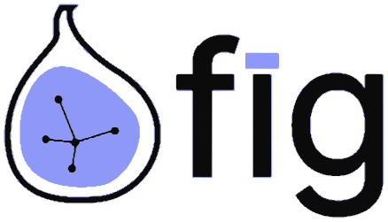
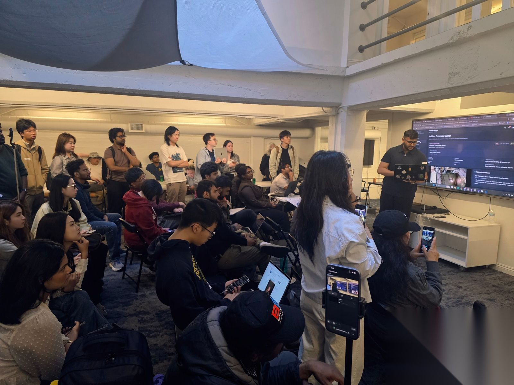

Industry partnership / 2026AI Design Makeathon.
Share your expertise with
the next generation of designers
and design engineers.
AI is changing products.
Design must catch up.
Participants tackle emerging AI interaction and product challenges, including how people understand, guide and trust increasingly autonomous systems, and build functional prototypes that people can experience.
Concepts made visible
Functional prototypes, project visuals and demos make participants’ ideas tangible and shareable.
From concept
to live demo.
- Nov 7–9
Online makeathon, panel & workshops
Three days of team formation, an industry panel, hands-on workshops, design and prototyping around real-world AI challenges.
- Nov 10–12
Online judging
A three-day virtual judging window: judges work in pairs, one from design and one with deep business and user context, and each pair reviews a group of projects; final format and criteria to be confirmed.
- Nov 14
Winner Demo
The only in-person day: selected winning teams present at Third Coast Foundry in San Francisco, followed by awards and a mixer. Everything before it is virtual.

Prior-event figures illustrate FIG’s community experience; they are not attendance projections for this makeathon.
Meet the
judges.
A good project has to work in the real world, not just look good as design. So we pair up a design judge and a judge who deeply understands the business context and real user scenarios to review each project.
Lewis Liu
Product, building agents and knowledge systems
Ex-Google (Gemini) · Startup advisor · Stanford GSBXinyu Qu
Applied AI Engineer
New York UniversityFred McHale
Executive Director of Product Design
Figma Educator Advisory Board, 2026–2027 · Ex-design manager, CiscoHeewon Moon
Product Designer
Ex-RingCentral · Academy of Art UniversityZiyuan “Zoey” Zhu
Creative Technologist and Project Lead
MIT · Co-founder, FuturePIXELNeha
UX Designer
Yitong Wang
User Experience Designer
California College of the ArtsHao Wang
Chief Strategy and Business Growth Officer
Stanford GSBXuyan Zhao
Principal Product Manager, AI
AI/ML product · Ex-Collectors, eBay · Boston UniversityKaushal Patel
Software Engineer, training data infrastructure
Ex-OpenAI, Meta, Google · Researcher, StanfordUniversity judges
Judges from The University of Chicago and University of Michigan
Final judging criteria, judge lineup and judging format are to be confirmed.
Bring your
team in.
Run a workshop
Show how you work or teach a skill: a day in the life of a product designer on your team, how an idea moves from brief to shipped product, or a hands-on session on building with your product.
Send a judge
Nominate a designer, product manager or engineer for the panel. Judges work in pairs and review a group of projects during Nov 10–12.
Internship opportunities
Share open internship and new-grad roles with participants, tell them what you look for, and meet candidates face to face at the Winner Demo.
Join the industry panel
A seat for a practitioner from your team on the industry panel, on where AI design is heading.
Drop-in feedback
A slot where teams show how they are using your product, ask questions and get feedback from the people who build it.
Give participants something to build with
Tool access, credits or resources they can use during the makeathon. In-kind contributions are welcome and credited.
Bring a business scenario
Set a real scenario from your work as a dedicated track. Several teams tackle it in parallel, you see their takes side by side at the Winner Demo, and you name and present the award that reflects what your team values.
These are starting points; timing, scope and recognition are agreed with each team. Neither partnership nor sponsorship influences judging or award decisions.
What partners
take home.
Whichever way your team takes part, this is what comes with it.
Your brand across the event
Logo and name on the event page and poster, mentions in our social posts before and after, and signage at the Winner Demo.
Your session, promoted
We announce your session to every participant and through FIG channels.
Meet emerging design talent
Live Q&A with design students and young design professionals, many of them looking for internships or their next role. We circulate your open roles; introductions need participants’ consent.
See how the next cohort designs
Watch how participants design with AI tools today: what they reach for first, and where they get stuck.
A seat at the Winner Demo
An invitation to the awards, Winner Demo and mixer in San Francisco on Nov 14.
Content for your channels
Photos and video from the Winner Demo, project highlights and a post-event recap with participation numbers, ready to use in your own posts, newsletters and recruiting pages.
Put your expertise
where the building happens.
Tell us how your team would like to take part, and we’ll shape the details together.
Discuss a partnership